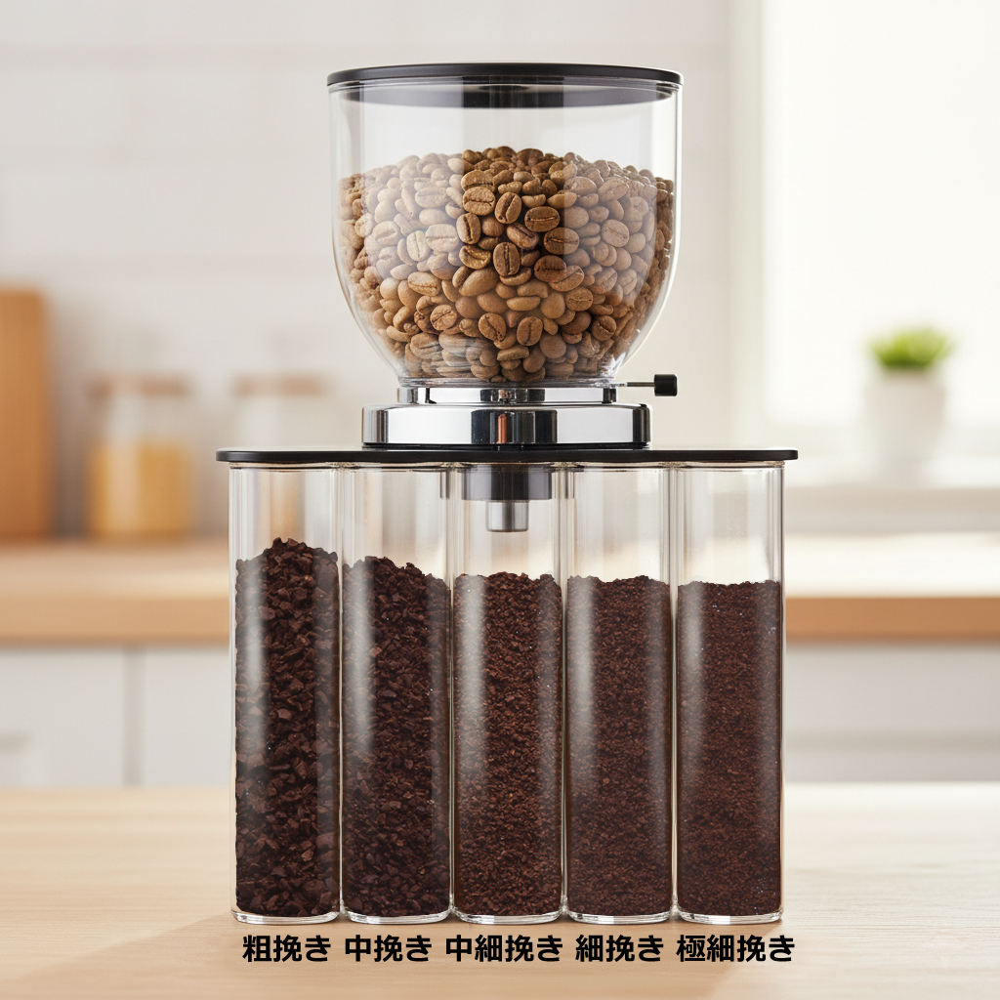

1. コーヒー豆を知ろう：ストレート、ブレンド、そして品種
コーヒー豆を選ぶ前に、まずは基本的な「コーヒー用語」と豆の種類を知っておきましょう。
ストレートとブレンド
ストレートコーヒー：ひとつの産地の豆を100%使用したコーヒーを指します。産地ごとの特徴や個性をダイレクトに味わうことができます。
ブレンドコーヒー：さまざまな産地のコーヒー豆を配合したものです。ストレートコーヒーだけでは出せない風味を創り出し、苦味や酸味がバランスよく配合されていることが多いため、初めてコーヒー豆を買う方にはブレンドコーヒーから試してみるのがおすすめです。
コーヒー豆の主な品種
- アラビカ種：現在、品質の良いコーヒー豆として流通しているもののほとんどがアラビカ種です。ティピカ、ブルボン、ゲイシャなど多くの品種が開発されています。
- カネフォラ（ロブスタ）種：アラビカ種より風味は劣るとされますが、安価で独特のコクがあります。エスプレッソ用やインスタントに多用されます。
- リベリカ種：流通量は少ないですが、独特の風味を持つ豆です。
ただし、品種よりも気候や土壌などの生育環境の方が味に大きく影響すると言われています。
2. 豆の選び方
美味しいコーヒーを淹れるには、豆選びがとても大切です。以下のポイントを参考にしましょう。
焙煎度合い
- 浅煎り：酸味が強くフルーティーな味わい。
- 中煎り：酸味と苦味のバランスが良い。喫茶店で一般的。
- 深煎り：苦味が強く香ばしい。ミルクとの相性も抜群。
初心者は「中煎り」から試すのがおすすめです。
鮮度
焙煎から2週間以内が理想。豆のまま購入し、淹れる直前に挽きましょう。
産地
ブラジル、コロンビア、エチオピアなど、産地ごとに味が異なります。少量ずつ試してお気に入りを探してみましょう。
さらに詳しいコーヒー豆の知識はこちら： https://afroaster.com/coffeebeams-erabikata
3. 豆の挽き方
豆を淹れる直前に挽くことで、コーヒーの香りを最大限に引き出すことができます。挽き方（粒度）は、コーヒーの味に大きく影響します。使用する器具に合わせて調整しましょう。
挽き目（粒度）の種類
粗挽き：ざらつきがあり、粒が粗い。フレンチプレスなどに向いています。
中粗挽き：粗挽きよりやや細かい。パーコレーターなどに向いています。
中挽き：最も一般的な挽き目で、ドリッパーでハンドドリップする際に適しています。
細挽き：砂糖くらいの粒度。サイフォンや水出しコーヒーに向いています。
極細挽き：パウダー状。エスプレッソやトルココーヒーに向いています。
STEP1：コーヒーミルにコーヒー豆をセットする
挽くコーヒー豆の量は、1人前で10gが目安です。アイスコーヒーの場合は氷で薄まるため、ホットコーヒーの倍の20gを準備しましょう。
コーヒーミルに豆をセットする際は、満遍なく入れるように意識してください。豆がバラついていると、挽いたときの粒度が不揃いになる可能性があります。
STEP2：好みの挽き目に調整する
挽き目を細かくすると苦味のある濃いコーヒーになり、粗くすると苦味の少ない薄いコーヒーになります。
ハンドドリップコーヒーを淹れる場合は、「中細挽き」〜「中挽き」程度がおすすめです。これはグラニュー糖くらいの粒度が目安です。
STEP3：ハンドルを回しコーヒー豆を挽く
挽き目の調整が終わったら、ハンドルを回してコーヒー豆を挽いていきます。
美味しく挽くための5つのポイント
ちょっとしたポイントを意識するだけで、より深い味わいのコーヒーに仕上がります。
- 淹れる直前に挽く：コーヒー豆は挽いた瞬間から酸化が進み、味が変わってしまいます。飲む直前に使う分だけ挽きましょう。
- ゆっくり挽く：急いでハンドルを回すと、粒度が不揃いになり微粉が多くなります。均一にするためにゆっくり回しましょう。
- 最後まで挽ききらない：最後の1〜2g程度は残しておくと均一性を保てます。この場合は最初に12g程度準備しましょう。
- 満遍なくコーヒー豆を入れる：片寄らないように豆を入れると粒度が均一になります。
- メンテナンスを忘れない：使用後はミルを掃除して微粉を取り除きましょう。
参考記事はこちら：
https://www.ucc.co.jp/enjoy/brew/goodcoffee_grind_02.html
https://kukuna-coffee.com/column/coffeebeans-grind-manual
4. 美味しい淹れ方（ハンドドリップ）
最も一般的なハンドドリップでの淹れ方を紹介します。
- お湯を90〜96℃に沸かす（沸騰後少し冷ます）
- ドリッパーにフィルターをセットし、豆10〜15gを入れる
- 少量のお湯を注ぎ20〜30秒蒸らす
- 「の」の字を描くようにゆっくり注ぐ
- 抽出が終わったらドリッパーを外して完成！
慣れてきたら温度や注ぎ方を工夫してみましょう。
さらに美味しく淹れる4つのコツ
ちょっとした工夫で、さらに美味しいコーヒーを淹れることができます。
- コーヒーに使う水について：水道水でも構いませんが、汲みたての新鮮な水を使いましょう。カルキ臭を取り除くために、沸騰後もしばらくボコボコと沸かし続けるのが効果的です。
- ペーパーフィルターをお湯で濡らす（リンス）：フィルターをセットしたら、一度少量のお湯で濡らして紙臭さをなくします。濡らしたお湯は捨てましょう。
- カップは温めておく：カップをお湯で温めておくと、コーヒーが冷めにくくなります。
- お湯の注ぎ方：ドリッパーに近い位置から静かに注ぎましょう。勢いよく注ぐと抽出にムラが出ます。
参考記事はこちら↓
豆の知識から淹れ方までわかりやすくまとめられています☆
https://kukuna-coffee.com/column/home-coffee
https://kinarino.jp/cat6/34110
5. 豆の保存方法
せっかくの美味しいコーヒー豆も、保存方法を間違えると風味が落ちてしまいます。以下のポイントを守って、鮮度を保ちましょう。
密閉容器に入れる：
コーヒー豆は空気に触れると酸化が進み、風味が損なわれます。密閉できる容器（ガラス製やホーロー製など）に入れましょう。専用のキャニスターもおすすめです。
直射日光・高温多湿を避ける：
光や熱、湿気もコーヒー豆の劣化を早めます。冷暗所（戸棚の中など）で保存するのが最適です。
冷蔵庫・冷凍庫の活用：
短期間（1週間程度）なら常温保存で問題ありません。長期間保存したい場合（2週間以上）は、冷蔵庫や冷凍庫がおすすめです。
ただし、冷蔵庫や冷凍庫に入れる場合は、完全に密閉し、他の食品の匂いが移らないように注意してください。また、出し入れの際の温度変化で結露しないよう、使う分だけ取り出すようにしましょう。冷凍した豆を使う際は、常温に戻してから挽くようにしてください。
コーヒー豆は生鮮食品と同じで、「使い切れる量をこまめに購入する」のが、常に美味しいコーヒーを楽しむためのベストな方法です。
音声解説データ
このページの内容を 音声で解説 したデータがあります。
手軽に聞き流してコーヒーの知識を復習してみてください。
▶️
音声解説を再生する
このガイドが、あなたのコーヒーライフの第一歩になれば幸いです。豆選びから淹れ方まで、ぜひ自分だけのお気に入りの一杯を見つけて、素敵なコーヒータイムを過ごしてください！ ☕️